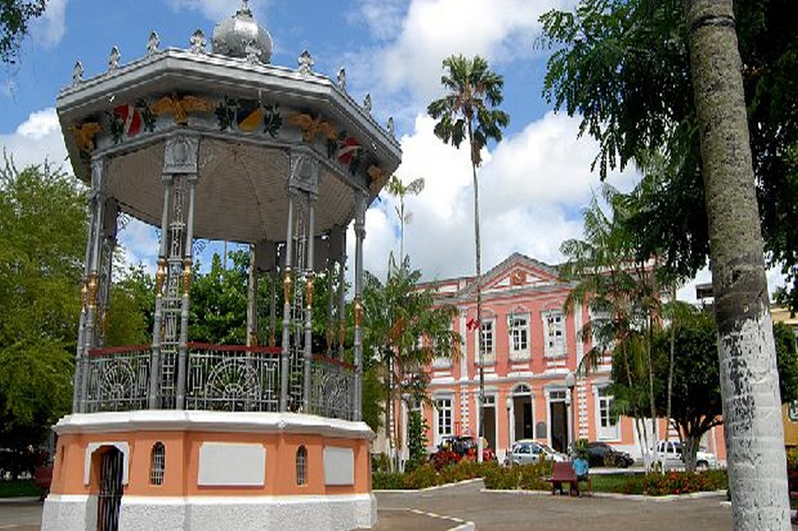

Aleksandro R. Monteiro
Sobre Mim
Meu nome é Aleksandro Ribeiro Monteiro, tenho 30 anos e nasci em 31 de outubro, em Bragança, no Pará. Sou técnico de TI e LED, trabalho em Belém com tecnologia e produção de eventos, uma área pela qual tenho grande interesse. Também gosto de programação, inovação e educação, e estou sempre buscando novos conhecimentos. Sou pai de dois filhos, estou noivo e me preparando para uma nova etapa da vida com o casamento. Considero-me uma pessoa curiosa, dedicada, comunicativa, criativa e determinada.

Bragança-Pará, Brazil
Bragança é uma cidade histórica localizada no nordeste do Pará, conhecida por sua cultura, gastronomia, tradições e belezas naturais. Banhada pelo rio Caeté, possui forte ligação com a pesca e com a cultura amazônica. É conhecida também pela tradicional Marujada de São Benedito, manifestação cultural e religiosa que representa parte importante da identidade bragantina. É uma cidade pela qual tenho carinho, pois faz parte da minha história.
